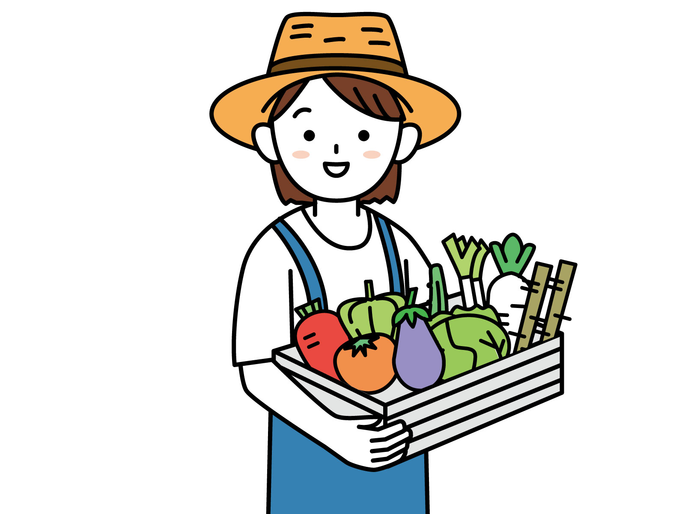

達人有話說

英國有機農業的先驅：伊娃巴爾芙夫人(Lady Eve Balfour)
「有機農業是不能被禁錮在一套死板的規則裡的，這在本質上取決於農民的態度，如果沒有正向及生態的觀點，就不可能做到以有機方式展開農業生產。」 引用自『有機農業推動中心』官方網站

杰羅姆˙羅德爾（Jerome Irving Rodale, 1898-1971）
「一切始於土壤：健康的土壤是種植健康作物的基礎。健康的土壤 = 健康的食物 = 健康的人。」 引用自『有機農業推動中心』官方網站